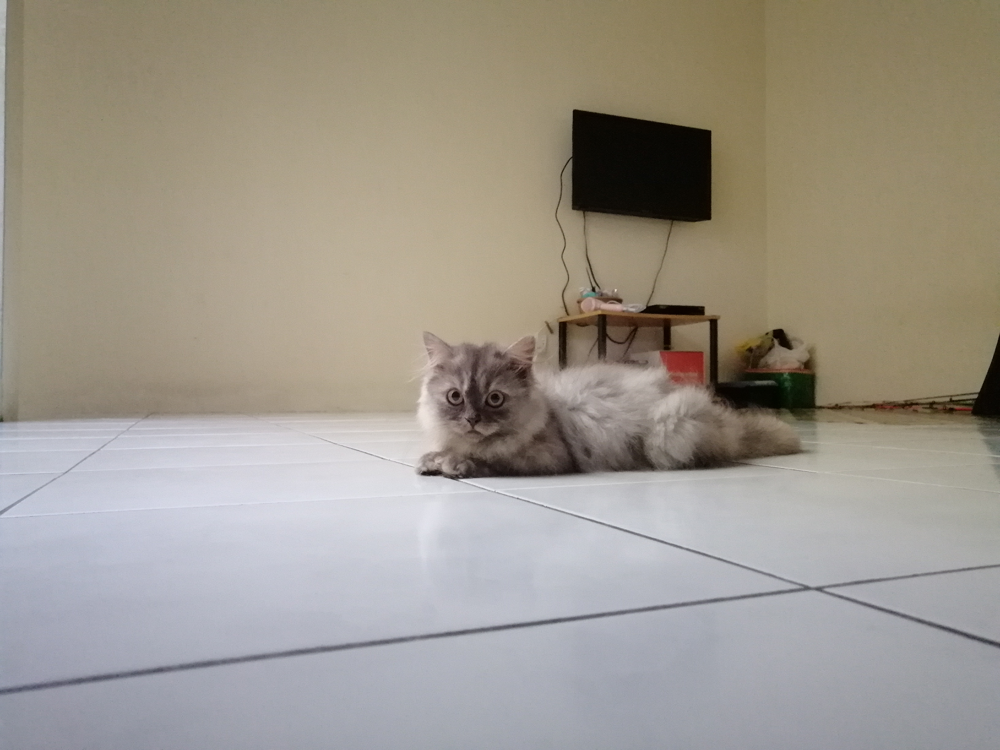

My name is Aldrin Anak Cliff and I am 21 years old. I am currently taking diploma in Information Management at UITM, Samarahan. Due to the Covid-19 virus, the government has announcing one of the important ways to prevent the virus from spreading which is the Movement Control Order (MCO). During MCO, people should stay at their home and avoid gathering. There's actually a lot of things to do during the MCO and i would love to share a day of my life during the MCO. First of all, I always check on the news to keep updated. Next, I will spend the rest of my day with my pet, Winky. Winky is a Persian Cat and she obviously look like a snowball. I really love to caress its fur because it is so fluffy. After that, I washed the motorcycle to fill my day. Usually, I will be spending the night by watching movies. I hope that the MCO will be available to flatten the infection curve and may our country will be free from the virus and disease.